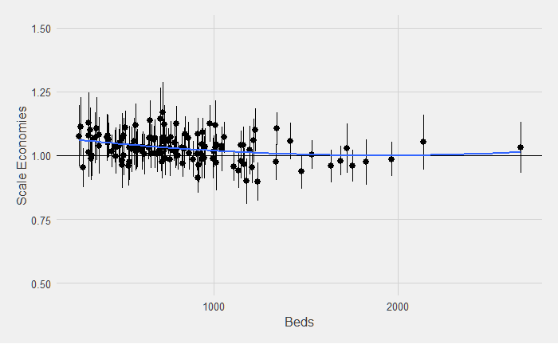
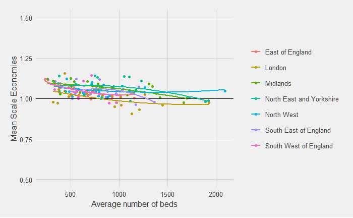
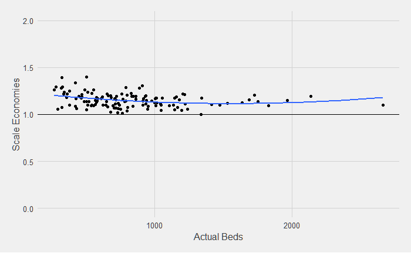
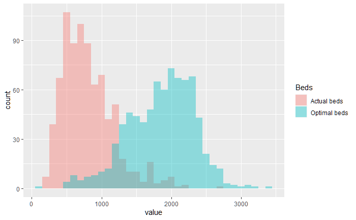

Lancaster University
Aim: To quantify the size of, and limits to, scale and scope economies in English hospital healthcare
Data taken from NHS National Cost Collection exercise, augmented by financial statement info and HR systems
Parametric methods used
Dealing with heterogeneity and multiproduct cost functions
Measurement of outputs
How do we measure size?
Parametric vs Non-Parametric Methods
UK Data available now is richer and inclusive of input price data
Scale economies = Inverse of the sum of individual output cost-output elasticities (Baumol, Panzar, and Willig 1982) -> does a 1% increase in all outputs mean total increase by more or less than 1%?


A shorter chapter which contrasts results using a L-R Quadratic Cost Function.
Results are similar but without the same relationship to size
The quadratic form has slightly more violations of theoretical principles
This chapter addresses a critique in the literature arguing against directly using a long-run cost function

